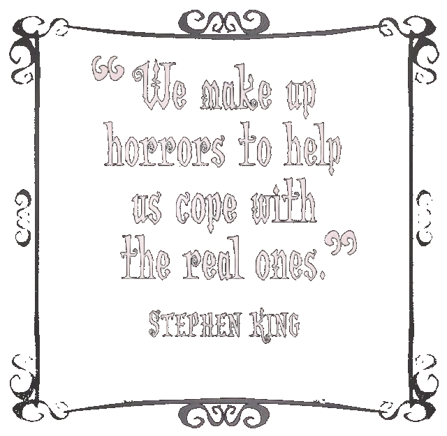

Η συγκεκριμένη ιστοσελίδα φτιάχτηκε στα πλαίσια του μαθήματος Εισαγωγή στην Επιστήμη των Υπολογιστών, που ανήκει στο πρώτο εξάμηνο του προγράμματος σπουδών του τμήματος Πληροφορικής του πανεπιστημίου ΟΠΑ. Έχοντας ως ζήτημα την δημιουργία μίας ιστοσελίδας με συγκεκριμένες προδιαγραφές, κληθήκαμε να χρησιμοποιήσουμε τις γλώσσες HTML και CSS για να φτιάξουμε ένα σάιτ το οποίο καλύπτει την ύλη του μαθήματος.
Καθώς το αντικείμενο της ιστοσελίδας αφέθηκε στην επιλογή του κάθε φοιτητή, αφορμήθηκα από την ελευθερία αυτή για να ασχοληθώ με ένα μεγάλο πάθος μου: την λογοτεχνία. Συγκεκριμένα, με το είδος της λογοτεχνίας που αγγίζει το πιο πρωτόγονο ένστικτο του αναγνώστη, σκαλίζει το υποσυνείδητό του, και τον φέρνει αντιμέτωπο με τους πιο βαθείς, αληθινούς, ρεαλιστικούς αλλά και σουρεαλιστικούς εφιάλτες του: την λογοτεχνία του τρόμου. Και ποιός ιδανικότερος αντιπρόσωπος του είδους από τον βασιλιά του Φόβου, Stephen King.
